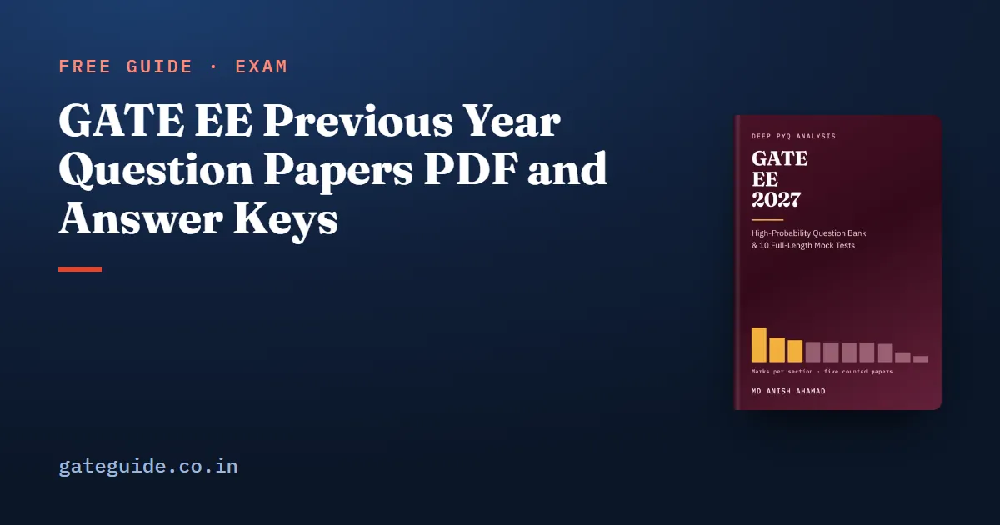

GATE EE Previous Year Question Papers PDF and Answer Keys

Every GATE Electrical paper from the last five years is free on an official GATE site, with its answer key and no sign-up. The catch is that the institutes which set the older papers have taken their own GATE sites down, so the files now live in an archive kept by later organisers. This guide gives you the official links for every EE paper from 2022 to 2026, the traps inside those files, and a way of using a paper that teaches you more than a timed attempt.
In this guide
Key takeaways
- The official archive is served by three organising-institute hosts: IIT Madras, IIT Guwahati and IIT Roorkee. Where a file sits on more than one, the bytes are identical.
- EE is one paper a year. The "S8" in the 2024 file name is the exam session, not a set.
- The 2022 paper prints its own key on its last two pages, and the 2025 paper prints ten unscored buffer questions after Q65.
- Four questions were marks to all, and four keys accept more than one answer. Mark your attempt from the key itself.
- The 2027 EE syllabus changes no examinable phrase, so the 2022 to 2026 papers are directly relevant. Download pages change each cycle; check the current notification at gate2027.iitm.ac.in.
The words this guide uses
A question paper is the organiser's PDF of the 65 questions. An answer key is the organiser's table of question number, type, section, key and marks. A session is the time slot the key records against each row; it is not a different paper.
The archive is the previous-years download page each new organiser maintains. An MTA entry, marks to all, means every candidate was awarded that question's marks.
Every EE paper here has the same frame: 65 questions and 100 marks, Q1 to Q10 General Aptitude and Q11 to Q65 Electrical. Q1 to Q5 and Q11 to Q35 carry one mark; the rest carry two. The GATE marking scheme guide explains MCQ, MSQ and NAT marking, which is common to every paper.
Where the archive actually lives
The older organisers' sites are gone. Checked on 10 October 2026, IIT Kharagpur's GATE host (the 2022 organiser) times out, and IIT Kanpur's (2023) does not resolve. What survives is the archive the recent organisers keep:
- IIT Madras archive, with EE papers from 2021
- IIT Guwahati archive, with EE papers from 2019
- IIT Roorkee archive, with EE papers from 2019
If a link below has moved, try the same file on another host before concluding it is gone. See the GATE 2027 exam schedule for where the cycle stands.
The papers and keys, with links
These are the five GATE EE papers of 2022 to 2026, the papers the GATE EE 2027 book counts question by question. Every link was checked on 10 October 2026.
| Year | Organising institute | Question paper | Answer key |
|---|---|---|---|
| 2026 | IIT Guwahati | EE paper 2026 | EE key 2026 |
| 2025 | IIT Roorkee | EE paper 2025 | EE key 2025 |
| 2024 | IISc Bengaluru | EE paper 2024 | EE final key 2024 |
| 2023 | IIT Kanpur | EE paper 2023 | EE key 2023 |
| 2022 | IIT Kharagpur | EE paper 2022 | EE key 2022 |
File sizes, to check your copy: 2026 paper 2,968,499 bytes and key 520,210; 2025 paper 1,013,019 and key 208,982; 2024 paper 1,013,050 and key 312,704; 2023 paper 1,049,539 and key 103,906; 2022 paper 2,548,662 and key 430,452.
The archives also carry EE papers from 2019 to 2021. They are official and fine for extra practice, but no number in this guide is counted from them.
What is inside the files
The 2022 key is in the paper. The 2022 file has 38 pages: 36 of questions and then the two-page key. Those last two pages match the separate key file, which carries no title or year of its own. If the key link ever moves, the paper still has it.
The 2024 name. EE24S8.pdf is the session, and the 2024 key records Session 8 against every EE row. There was one EE paper that year.
No printed year. The 2023 and 2024 papers do not print the year. Each names its organising institute, IIT Kanpur and IISc Bengaluru, which tells you the year.
The 2025 buffer questions. The 2025 paper prints ten extra questions after Q65, labelled as buffer questions. They were not scored and have no key entries.
Trap: Time a 2025 attempt on Q1 to Q65 only. Solve the buffer questions too and your timing and your total both stop matching the paper the candidates sat.
Figures. All five papers have a text layer, but circuits, waveforms and block diagrams do not survive in it. Search can miss a question built on a figure; scroll to the number.
How to mark your own attempt with the key
Your score is the marks you earned, minus a third of a mark for each wrong one-mark MCQ and two-thirds for each wrong two-mark MCQ. MSQ and NAT carry no negative marks.
Here is the marks from correct answers, the number of wrong one-mark MCQs and the number of wrong two-mark MCQs.
A worked example
Suppose your attempt earns 52 marks of correct answers, with six one-mark and nine two-mark MCQs wrong.
Now read the key's special rows. The keys mark four questions MTA: 2023 Q43, 2024 Q7, 2024 Q18 and 2026 Q58. On the 2024 paper that is Q7 at two marks and Q18 at one, 3 marks to credit whatever you answered. Four keys accept more than one answer: 2022 Q11, Q56 and Q63, and 2025 Q59.
Remember: An MSQ scores only if you pick every correct option and no wrong one. In five of the 22 counted MSQs, including 2023 Q27 and 2026 Q31, the key had exactly one correct option.
How to read a paper so it teaches you something
The second use of a paper is as data. Assign each of the 65 questions to a section of the 2027 syllabus and add the marks. The technical marks must close at 85, with General Aptitude at exactly 15.
The 2026 paper, counted this way, gives Engineering Mathematics 18, Power Systems 12, Electric circuits 11, Power Electronics 10, Electrical Machines 9, Analog and Digital Electronics 7, Electromagnetic Fields 6, Control Systems 6, Signals and Systems 4 and Measurements 2. Add them: 85. A column that does not close is wrong.
Do this once and every weightage table reads differently. Consecutive EE papers differ by 16 to 24 marks out of 85, summed section by section. The counted result for all five papers is in the GATE EE subject-wise weightage guide.
In one line: A paper attempted shows your speed; a paper counted shows where the marks sit, and only a column that closes at 100 can be trusted.
Which years matter for the 2027 syllabus
The EE syllabus barely moved. Compared word by word, the 2027 document adds, removes and rewords no phrase against 2026. Its only text change is a spelling fix, "Butterwoth" to "Butterworth".
So all five papers from 2022 to 2026 are directly relevant. One question falls outside the 2027 syllabus: 2023 Q57, on microcontroller flags after an 8-bit addition, 2 marks. Skip it in practice or treat it as a bonus.
The format moved more than the content. MSQs ran 0, 6, 7, 4 and 5 from 2022 to 2026, and NATs fell from 28 in 2023 to 13 in 2026. Prepare for all three types.
Some named topics have no counted question: oscillators, active filters, timers, Schmitt triggers, oscilloscopes and digital meters, compensation and insulators. Read them from the syllabus. The GATE EE important topics guide sets them against the topics the papers keep using.
What the papers cannot tell you
Five papers under five institutes show what has been asked and in what form. They cannot show a trend, and none was set by IIT Madras, which organises GATE 2027. IIT Madras last organised GATE in 2019, and that EE paper is not part of the count.
The GATE EE 2027 book carries the finished count of all five papers question by question, and 914 questions written for the book with worked solutions, including 10 mock tests.
Quick revision
- Download from the IIT Madras, IIT Guwahati or IIT Roorkee archive; the files are identical.
- EE is one paper a year; EE24S8.pdf is session 8, not a set.
- The 2022 paper carries its key on its last two pages.
- Ignore the ten buffer questions after Q65 in the 2025 paper.
- Score with and credit the four MTA questions.
- The 2027 syllabus changed no phrase; only 2023 Q57 sits outside it.
- Count one paper against the 2027 syllabus and check it closes at 85 plus 15.
Frequently asked questions
Where can I download GATE EE previous year question papers officially?
From the archives kept by GATE organising institutes. IIT Guwahati (gate2026.iitg.ac.in/download.html) and IIT Roorkee (gate2025.iitr.ac.in/download.html) carry EE papers from 2019, and IIT Madras (gate2027.iitm.ac.in/download) from 2021. The 2026 paper and key are on the IIT Guwahati site. Download pages change between cycles, so check the current notification.
Where is the GATE EE 2026 question paper and answer key?
On the GATE 2026 site of IIT Guwahati, which organised that year. The paper is under doc/download/2026/QPs/EE.pdf and the key under doc/download/2026/Keys/EE_Keys.pdf. The IIT Madras archive carries the same paper with identical bytes. The 2026 key records Session 5 against every EE row, and one question, Q58, was marks to all.
Why does the GATE EE 2025 paper have more than 65 questions?
It prints ten extra questions after Q65, labelled as buffer questions. They are not among the 65 scored questions and have no entries in the answer key. Ignore them when you time an attempt or mark yourself, or your total will not match the 100-mark paper the candidates actually sat.
Is there one GATE EE paper a year or two sets?
One. EE was held as a single paper in one session in each year from 2022 to 2026, so a year and a question number identify a question completely. The S8 in the 2024 file name EE24S8.pdf is the examination session recorded in that year's key, not a set number.
Did the GATE EE syllabus change for 2027?
Not in content. Compared word by word with the 2026 document, the 2027 EE syllabus adds, removes and rewords no phrase. Its only text change is a spelling fix, Butterwoth to Butterworth. So the 2022 to 2026 papers remain directly relevant, with one 2023 microcontroller question the 2027 syllabus does not name.
Sources
- GATE 2027 official website (IIT Madras)
- GATE official paper archive (IIT Madras)
- GATE official paper archive (IIT Guwahati)
- GATE official paper archive (IIT Roorkee)
- GATE 2027 EE syllabus (IIT Madras)
Dates, fees and the syllabus are set by the GATE 2027 organising institute and can change. Always confirm at gate2027.iitm.ac.in.